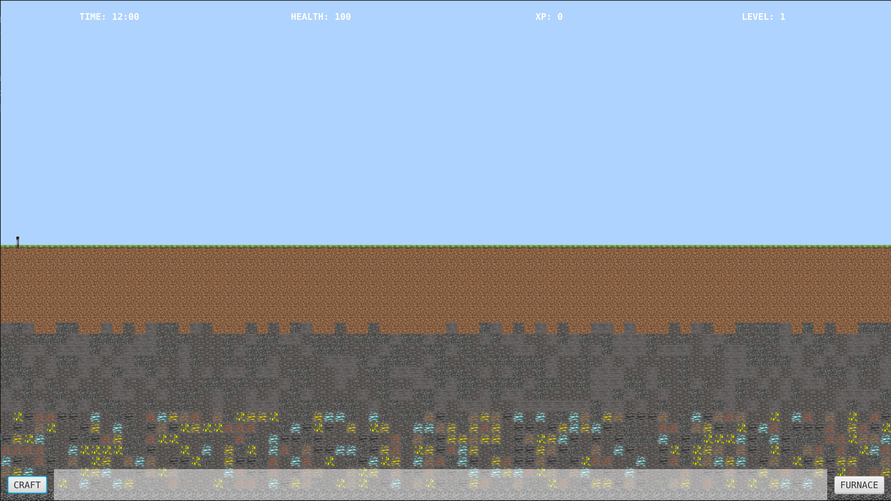
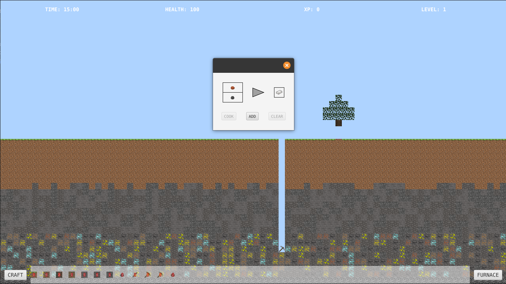

Flatcraft
Flatcraft ist ein gemeinschaftliches Projekt eines Teams von 4 Personen im Rahmen des IUT. Dieses Projekt hatte hauptsächlich einen pädagogischen Zweck, um unsere Fähigkeiten in Java zu entwickeln. Flatcraft ist einfach ein 2D-Spiel ähnlich wie Minecraft mit Blöcken und Crafting!
Das Spiel besteht aus mehreren Biomen:
- Overworld (das Grundbiom)
- Das Nether (die Unterwelt)
- Und das Ende (Endbiom)
In Flatcraft können wir die Welt erkunden, Biome ändern, Werkzeuge und Waffen herstellen, Materialien verfeinern und Essen im Ofen kochen.

(Spielstart)

(Möglichkeiten zum Crafting)

(Möglichkeit, einen Ofen zu verwenden)

(Ressourcenabbau)

(Das Nether)

(Das Ende)